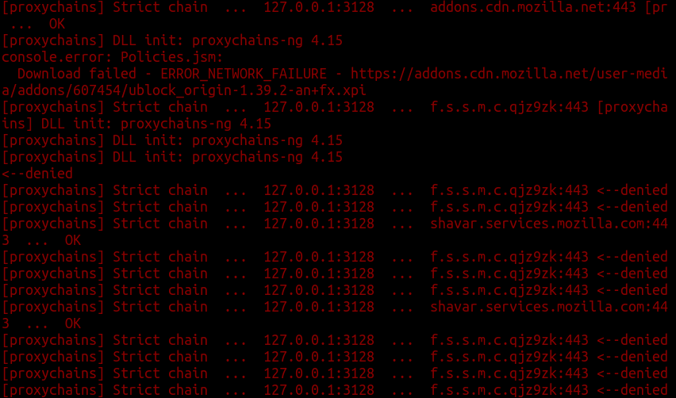

Librewolf
Librewolf é um fork do Firefox com os principais objetivos em privacidade, segurança e liberdade do usuário.[1]
Versão testada: 95.0.2
Nível de Spyware: Baixo
Librewolf faz algumas chamadas na inicialização para f.s.s.m.c.qjz9zk que se parece com um endereço obliterado, e shavar.services.mozilla.com que é destinado (no entanto, ele pode ser desativado limpando o URL em browser.safebrowsing.provider.mozilla.updateURL).[2] Há também uma tentativa de verificar atualizações sobre a extensão uBlock Origin pré-instalada.
Esta é uma grande melhoria em comparação ao Firefox.
